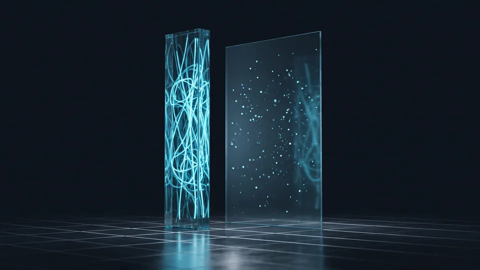

What is the difference in appearance between a micro and a macro influencer?
A micro influencer speaks in depth to a narrow field of interest; a macro influencer offers visibility spread across a wide section of people. The difference isn't only the follower count. The language of the profile, the tempo of the content, the character of the comments section and the closeness the audience builds with the brand turn into an entirely different picture on the two sides. And the choice comes out of that picture.
We read the difference in appearance across two layers. The first layer is the profile's own aesthetic: how often it posts, its choice of framing, its use of fixed formats. The second layer is the audience's behaviour. Who writes the comments, what do they ask, does curiosity show in the sentences? An influencer marketing agency's first job is to note those two layers separately. A choice made on the follower count alone will mislead you. We use the same distinction on the social media management side too.
How a micro influencer's profile looks
A micro influencer is a content creator reaching between a few thousand and a few tens of thousands of followers within a narrow field of interest. The feed is mostly locked onto a single subject. The framing is plain, the language warm, the scale of production domestic. The followers know one another; the comments read like conversation. A brand collaboration doesn't look foreign in that feed — it moves along as a continuation of the daily posts.
How a macro influencer's profile looks
A macro influencer is a widely recognised figure addressing an audience of hundreds of thousands. Several themes sit side by side in the feed. The production quality is high and the proportion of branded content is noticeable. In a crowded comments section it is an anonymous audience that speaks, rather than familiar faces. The line between branded content and organic posts doesn't escape the viewer's eye.
Which comes forward: breadth of reach, or depth of engagement?
Breadth of reach creates recognition; depth of engagement persuades. Macro names show the brand to a great many people. Micro names reach fewer, but the interest that comes back is warmer and more talkative. The right choice depends on whether the campaign wants to introduce something or to break down hesitation.
The number of businesses with a digital shop window in Türkiye is rising fast. The ETBİS 2025 report — ETBİS is Türkiye's central e-commerce information system — points to 634,611 e-commerce businesses. As the number of competitors rises, so does the value of the right voice. In a crowding market, what makes the difference is the right profile carrying the right message. Agency-supported influencer marketing is exactly that job of matching. Experienced influencer marketing agencies base the decision not on the follower count but on the fit with the audience.
What wide reach contributes to brand visibility
Wide reach puts a new name onto a great many people's radar in a short time. For brands new to a category, that visibility is valuable. A single macro post starts a sense of familiarity among people who have never heard your name. The name becoming something people search for is a by-product of that visibility.
The persuasive power of a narrow but deep community
In narrow communities the follower sees the content creator as a friend. A recommendation leaves the impression not of an advertisement but of an experience being passed on. Because a name speaking to a niche audience looks like someone genuinely using the product, hesitations are resolved easily. In small communities the comments are often written right at the threshold of a decision.
What does the comments section look like?
The comments section is the profile's X-ray. On micro accounts, questions about size, use and durability line up. On large accounts, short expressions of approval and emoji predominate. That difference in appearance tells you from the start what to expect from a collaboration.
In which situation do you choose micro, and in which macro?
If your product needs explaining, we lean towards the micro side; if it needs recognition, towards the macro. Services that call for technical explanation find a better response in a narrow audience. Everyday products addressing a wide consumer base, on the other hand, benefit from the visibility of large accounts. The decision takes shape according to how hard the product is to explain. And a proper middle way between the two is perfectly possible.
Tying the selection process to a written flow reduces the influence of personal taste. As an influencer marketing agency, we run that choice in five steps:
- We write the campaign's aim in a single sentence.
- We list the subjects the target audience follows.
- We sift the candidate profiles for niche fit and for the language of their content.
- We set up a small-scale trial collaboration with at least three candidates.
- We multiply the format that works through social video and Reels production.
The need for visibility at a product launch
At a launch, the first goal is to be noticed. If awareness of the category is low, a name with wide reach opens the door. The micro wave that follows shows the curious person what the product looks like in daily life. Planning the two waves within the same week stops the curiosity going cold.
Refreshing trust at an established brand
Known brands look less for visibility than for currency. Niche accounts do a better job here. Names from different professions showing the same product within their own routines keep the brand fresh. Long-running collaborations leave a more familiar impression than one-off posts.
Signals to look for when choosing an influencer marketing agency
Look not at the agency's own presentation but at the variety of profiles it works with. A strong influencer marketing agency doesn't arrive with a list of names squeezed into a single category. It suggests creators who catch your brand voice without imitating it, shares the brief in writing, and defines the content approval flow from the very start. A pitch that shows no concrete examples is selling you nothing but a cover page.
We talk about where the audience is from data, not from guesswork. TurkStat's latest research — TurkStat is Türkiye's statistical institute — shows internet use spreading at household level. That is why an influencer marketing agency's role cannot be limited to recommending a single platform. Relationships without a clear approval flow seize up at the first crisis. To extend the life of the content, a re-run plan on the Meta Ads side comes onto the table too. We build the budget side together with the performance marketing team. This calendar has to talk to the rest of your digital marketing plan.
The sector depth of the portfolio
On the marketing side an influencer portfolio may be long; what matters is its depth. How many collaborations have been done in your sector, which formats have been tried, which tone held? If those questions get no answer with a concrete example, the list is nothing but a shop window.
How the content's language fits the brand voice
The brand voice is the fixed character that sets your organisation's tone of speech. An influencer marketing agency should take that tone as its reference when suggesting candidates. A playful account struggles to speak for a serious financial brand. The fit of tone determines whether the viewer counts the content as an advertisement or as a recommendation.
“The number of businesses trading online, 600,800 in 2024, rose to 634,611 in 2025.”
— Ministry of Trade, The Outlook for E-Commerce in Türkiye 2025
Can micro and macro names be combined in the same campaign?
They can — the two profiles cover each other's gaps. The macro name builds the campaign's roof and announces it to a wide public. The micro names localise the same message within their own communities. Thanks to the layered structure the brand is both visible to the crowd and familiar within small circles. When the roles are clearly separated, neither side puts the other in the shade.
We run the content calendar from a single centre. Even when the agency has a list of influencers ready, we rebuild the calendar around the brand. The main message stays fixed while the way of telling it changes from profile to profile. Without that flexibility, the collaborations end up looking like copies of one another. Repeating a single voice makes the viewer weary. An experienced influencer marketing agency treats being able to have the same brief spoken in different voices as a fundamental measure. If you'd like to build the calendar together, reach us through our contact page.
The layered structure of appearances
The layered structure has three rings: announcement, experience and reminder. A name with a wide audience takes on the announcement. Niche accounts carry the telling of the experience. Short videos close the reminder ring.

Micro and Macro Influencer Comparison Table
| Appearance Criterion | Micro Influencer | Macro Influencer |
|---|---|---|
| Follower band | A few thousand – a few tens of thousands | Hundreds of thousands and above |
| Audience structure | A community concentrated in a single niche | A wide and mixed audience |
| Look of the content | Plain framing, everyday language | High production values, staged scenes |
| Character of the comments | Detailed questions and shared experience | Mostly short praise and emoji |
| Brand fit | Explaining niche products and services | Announcing to a wide consumer audience |
| Typical role | Trust and persuasion | Recognition and reach |
The micro–macro distinction isn't a contest of superiority, it's a choice of appearance. If your product needs explaining you turn to narrow, warm communities; if it needs recognition, to a wide audience. Building the two together is the most balanced route for most SMEs. Don't rush the decision; a small trial is always a good idea. If you'd like to draw up the list of profiles that suits your brand, write to us through our quote form and we'll share our influencer marketing agency experience with you throughout the process.